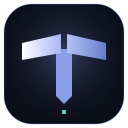
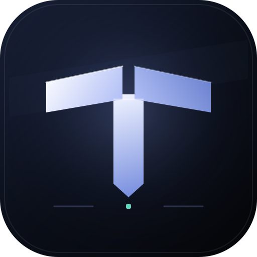
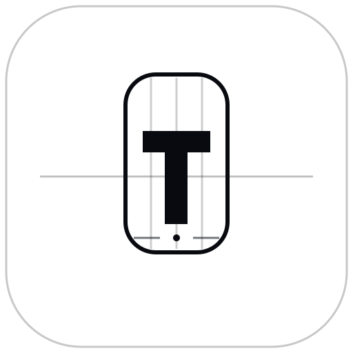
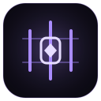
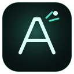
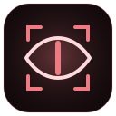
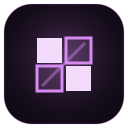
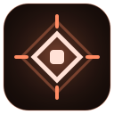

Единый центрT-ModTVR × SGL · VISUAL SYSTEM
T-Mod Media Kit
Единое семейство знаков для приложения, сайтов, документов и публикаций экосистемы.




Личный контурReactor
Интеллектуальный контурAtlas
Закрытый контурОВР
Игровой залGames
Операционный центрЯдерный Reactor